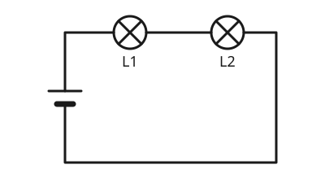

Die Reihenschaltung
Mit einem KI-Tutor lernen
Ein KI-Tutor erklärt dir diese Seite und hilft dir bei den Übungen. Wähl deinen Assistenten:
Mit Claude öffnen Mit ChatGPT öffnen Mit Mistral Vibe öffnen
Du nutzt dein eigenes Konto beim Anbieter. Der Assistent ist kein Angebot von lernapps.net: lernapps liefert nur Inhalte und Übungen. Die Wahl gilt für alle Seiten, nur auf diesem Gerät.
Zwei Lampen hintereinander
Früher gab es Lichterketten, bei denen alle Lämpchen ausgingen, sobald eines kaputt war. Das liegt daran, dass die Lämpchen in einer Reihenschaltung hintereinander hingen.
Alles in einem Weg
- Reihenschaltung
In einer Reihenschaltung sind die Bauteile hintereinander geschaltet. Der Strom hat nur einen Weg, der durch alle Bauteile führt.

Der Strom läuft zuerst durch L1, dann durch L2 und zurück zur Batterie.
Quelle: eigene Zeichnung. Lizenz: CC-BY-4.0.Weil es nur einen Weg gibt, fließt der Strom durch jedes Bauteil. Fällt ein Bauteil aus oder wird die Leitung an einer Stelle unterbrochen, ist der ganze Kreis offen. Dann fließt nirgends Strom, und alle Bauteile sind aus.
Der Schalter in einer Reihenschaltung
Ein Schalter, der irgendwo im Kreis sitzt, schaltet alle Bauteile der Reihenschaltung zugleich aus, wenn er geöffnet wird.
Eine Lampe fällt aus
L1 wird herausgeschraubt

Bei L1 fehlt die Lampe. Der Weg ist unterbrochen.
Quelle: eigene Zeichnung. Lizenz: CC-BY-4.0.Du schraubst L1 heraus. Der Weg des Stroms ist jetzt an dieser Stelle unterbrochen. Obwohl L2 in Ordnung ist, fließt durch sie kein Strom, und sie bleibt dunkel.
Übung
Übung
Lösung
Nein, der Weg ist unterbrochen, also fließt nirgends Strom. richtige Antwort
In einer Reihenschaltung gibt es nur diesen einen Weg. Ohne L1 ist der Kreis offen.
Ja, denn L2 ist ja heil.
Dass L2 heil ist, reicht nicht. Sie braucht einen geschlossenen Stromweg.
Ja, aber nur schwach.
Ohne geschlossenen Kreis fließt auch kein schwacher Strom.
Die Lücke bei L1 öffnet den ganzen Kreis. Deshalb bleibt auch L2 dunkel.
Mehr dazu:
Übung
Lösung
Richtige Antwort: Die Aussage stimmt.
Alle Bauteile liegen hintereinander. Der Strom muss durch jedes einzelne hindurch.
Mehr dazu:
Übung
Lösung
Wenn der Schalter geschlossen ist. richtige Antwort
Dann ist der einzige Weg geschlossen, und der Strom fließt durch beide Lampen.
Wenn der Schalter offen ist.
Ein offener Schalter unterbricht den einzigen Weg.
Immer, der Schalter betrifft nur eine Lampe.
In einer Reihenschaltung betrifft jede Unterbrechung alle Bauteile.
In einer Reihenschaltung schaltet der Schalter alle Bauteile zugleich ein oder aus.
Mehr dazu:
Übung
Lösung
Die Bauteile liegen hintereinander. richtige Antwort
Das ist die Bedeutung des Wortes Reihe.
Fällt ein Bauteil aus, gehen alle anderen aus. richtige Antwort
Der einzige Weg ist dann unterbrochen.
Jedes Bauteil hat seinen eigenen Stromweg.
Das gilt für die Parallelschaltung, nicht für die Reihenschaltung.
In der Reihenschaltung gibt es einen Weg durch alle Bauteile. Eine Unterbrechung betrifft alle.
Mehr dazu: